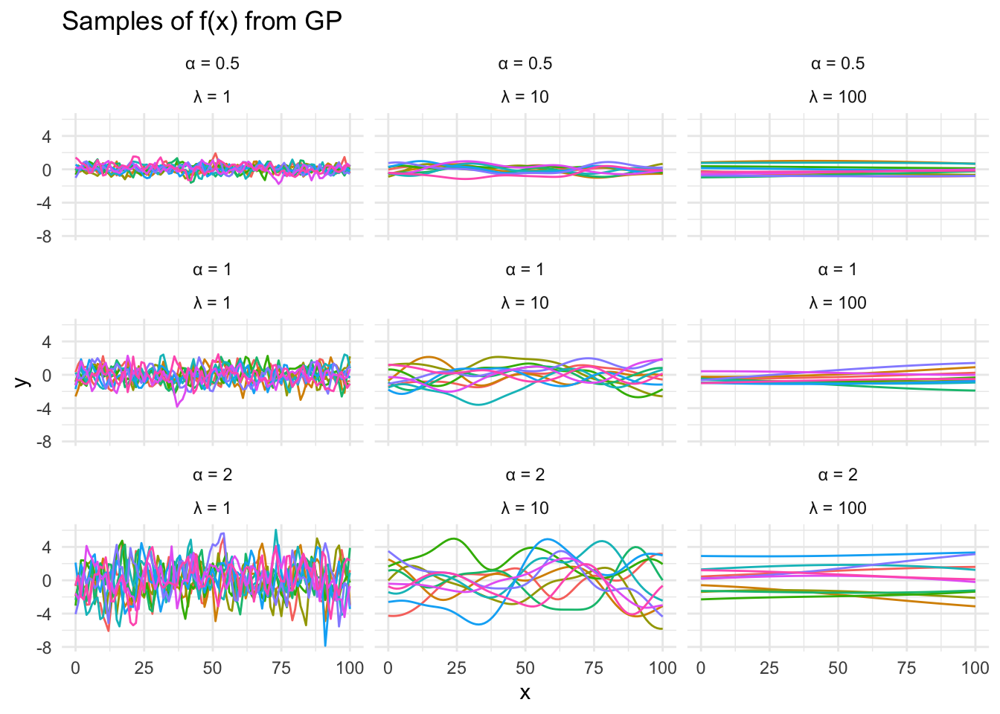
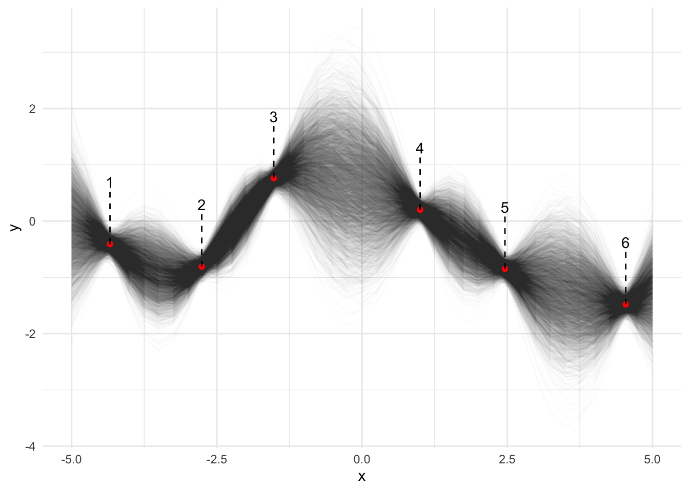
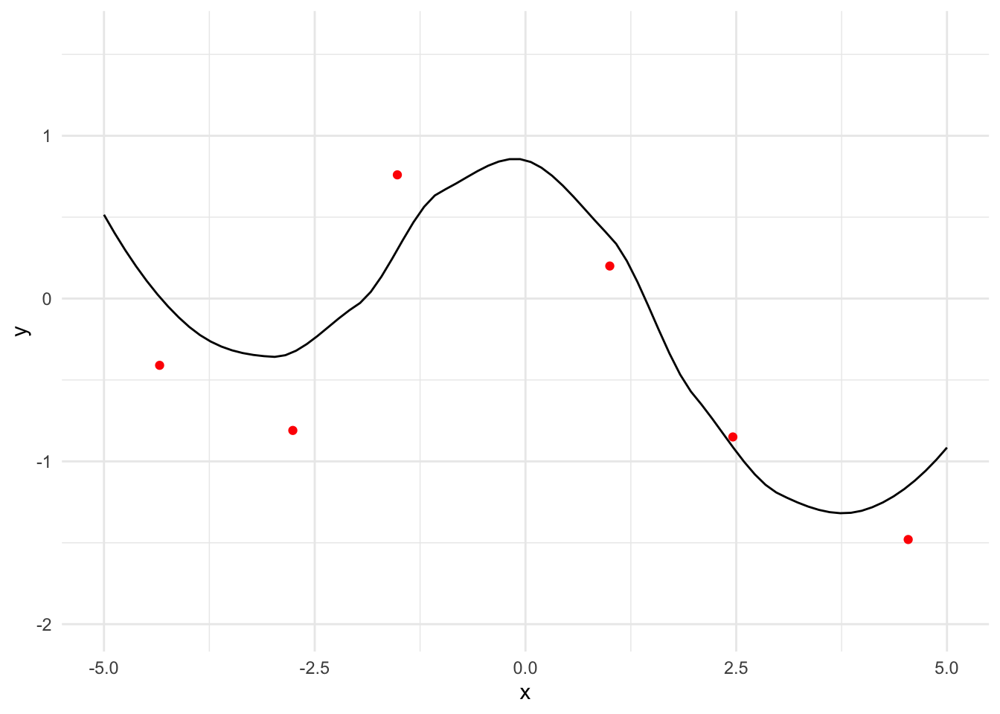

I stumbled upon Gaussian Processes when looking into how the MIPRO prompt optimisation algorithm works and felt compelled to learn more about it. It’s a very nifty application of Bayesian modelling to analyse functions where data points are hard to get.
This post is based on a great lesson by Carpentries, which is part of a longer series on probabilistic programming in R. Very worth checking out if you want to know more.
WTH are Gaussian Processes?
Imagine your data \(y\) are noisy outputs of a function of \(x\), which is the function you’re trying to model.
\[
y \sim N(f(x), \sigma^2)
\]
We don’t know \(f(x)\), so we imagine that there’s some distribution \(GP\) that generates functions and the \(f(x)\) we’ve observed is one function drawn from that distribution. \(GP\) (the Gaussian Process) is parameterised by a mean, \(\mu\) and a kernel, \(K\). It’s a multivariate normal distribution, i.e. the normal distribution generalised to multiple dimensions.
\[
f(x) \sim GP(\mu, K)
\]
What’s the point of this? Well it allows us to use our Bayesian toolbox (hello again Stan) to refine our estimate of \(GP\), and so the samples we draw from a posterior of \(GP\) are closer to the true \(f(x)\).
The Kernel \(K\)
\(K\) is the most interesting parameter, being the covariance of the Gaussian Process. There’s some art to what function is chosen for \(K\), though I don’t want to get hung up on that at this point. Suffice it to say that the popular choice is squared exponential covariance, which is parameterised by \(\alpha\) and \(\lambda\).
If we implement the kernel and draw from \(GP\), we can see some potential functions. Each draw from \(GP\) will give us a vector of \(f(x)\) for the input \(x\) vector. We get a discrete approximation of the continuous function.
set.seed(42)library(tidyverse)sq_exp_cov <-function(x, lambda, alpha) { n <-length(x) K <-matrix(0, n, n)for (i in1:n) {for (j in1:n) { diff <-sqrt(sum((x[i] - x[j])^2)) K[i, j] <- alpha^2*exp(-diff^2/ (2* lambda^2)) } } K}x <-0:100GP <-function(alpha, lambda, n_samples =10) { K <-sq_exp_cov(x, lambda, alpha) mat <- MASS::mvrnorm( n_samples,mu =rep(0, length(x)), # Set the average level of the process to 0Sigma = K )t(mat) |>data.frame() |>mutate(alpha = alpha, lambda = lambda, x = x) |>pivot_longer(c(-x, -alpha, -lambda), names_to ="sample", values_to ="y")}grd <-expand.grid(alpha =c(0.5, 1, 2), lambda =c(1, 10, 100))samples <-map2(grd$alpha, grd$lambda, GP) |>bind_rows()labeller <-function(variable, value) {if (variable =="alpha") {sprintf("α = %s", value) } else {sprintf("λ = %s", value) }}ggplot(samples) +aes(x = x, y = y, group = sample, colour = sample) +facet_wrap(~ alpha *~lambda, labeller = labeller) +geom_line(show.legend =FALSE) +labs(title ="Samples of f(x) from GP") +theme_minimal()

Figure 1
Varying \(\alpha\) and \(\lambda\) gives us an idea of how these hyperparameters change the functions we draw. \(\alpha\) controls the standard deviation and \(\lambda\) controls the correlation between \(x\) points.
Gaussian Process Regression - using data to refine \(GP\)
Imagine we’ve observed some (noisy) data from a mystery function.
We intend to predict the values of \(y\) at some other \(x\) beyond the ones we’ve observed, to see what \(f(x)\) might look like. We’ll choose [-5, 5] as the domain.
x_pred <-seq(-5, 5, by =0.25)# you'll get a smoother approximation for smaller increments, but at increase computation cost
Then we model it all in Stan. Personally I find Stan models easier to read in the order model, data, parameters.
data {// Observed dataint n_data;array[n_data] real x_data;array[n_data] real y_data;// Observation errorreal<lower=0> sigma;// x values for which we aim to predict yint n_pred;array[n_pred] real x_pred;// Hyperparameters for the kernelreal alpha;real lambda;}transformed data {// We join the x observations and desired x prediction pointsint n = n_data + n_pred;array[n] real x; x[1 : n_data] = x_data; x[(n_data + 1): n] = x_pred;// We calculate the Kernel values for all xmatrix[n, n] K; K = gp_exp_quad_cov(x, alpha, lambda);// Add nugget on diagonal for numerical stabilityfor (i in1 : n) { K[i, i] = K[i, i] + 1e-6; }}parameters {// This is what we want to estimatevector[n] f;}model {// Likelihood is tested against the observations y_data ~ normal(f[1 : n_data], sigma);// f is sampled from GP// The domain of the GP prior is all x// We assume the mean is always 0 f ~ multi_normal(rep_vector(0, n), K);}
The model section gives the high-level view of what we’re doing here: simulating those equations from earlier. The main thing to understand is that the domain of GP is both the \(x\) observations and the additional points. We’re interested in the model’s uncertainty about what \(f\) looks like at the points we haven’t observed.
Here’s the R code to run that model. I prefer to use CmdStanR - see here for more on that and some general tips.
This is cmdstanr version 0.8.1
- CmdStanR documentation and vignettes: mc-stan.org/cmdstanr
The R-hat and ESS summaries tell you if the model has converged. This one has, but I had to double the maximum treedepth. Let’s now plot the draws of \(f(x)\) from the \(GP\) posterior.
x_vals <-c(df6$x, x_pred)draws <- samples$draws(format ="draws_matrix") |>as_tibble() |># Every row is a draw, which we numbermutate(draw =1:n()) |># Since each column is an observation f(x) for x indices, we pivotpivot_longer(starts_with("f"), names_to ="x", values_to ="y") |># And map the x index back to an x valuemutate(idx =as.numeric(str_extract(x, "[0-9]+")),x = x_vals[idx],y =as.numeric(y) )ggplot() +geom_line(data = draws, mapping =aes(x = x, y = y, group = draw), alpha =0.01) +geom_point(data = df6, mapping =aes(x = x, y = y), colour ="red") +geom_text(data =mutate(df6, n =rank(x)), mapping =aes(x = x, y = y, label = n), nudge_x =0, nudge_y =1.1) +geom_segment(data = df6, mapping =aes(x = x, y = y, yend = y +1), linetype ="dashed") +theme_minimal()

Figure 2
The observations are shown as red points, and I’ve numbered them for ease of reference. You can see the predictions of \(f(x)\) (the black lines) don’t deviate far from the observations, and some intervals between observations are very well-defined too. However for certain intervals they take a wide variety of lines, such as the interval crossing \(x=0\). This is intuitive: imagine asking a group of humans to draw a smooth line between the points. Most of them would draw the same lines directly between points 2-3 and 4-5, but there would be much disagreement about what point to turn at between 3-4.
The effect of noise
In that model \(\sigma\) controls the amount of noise we believe we have on the observations. Increasing that number will increase the uncertainty of the model, and correspondingly will make it more likely the MCMC simulation diverges.
Optimising with Cholesky decomposition
We can speed up the simulation with a trick call Cholesky decomposition. We decompose \(K = LL^T\) and reparameterise \(f = \mu + L\eta\). If \(\eta\) is normally distributed with mean zero and unit variance, this is equivalent.
data {// Observed dataint n_data;array[n_data] real x_data;array[n_data] real y_data;// Observation errorreal<lower=0> sigma;// x values for which we aim to predict yint n_pred;array[n_pred] real x_pred;// Hyperparameters for the kernelreal alpha;real lambda;}transformed data {// We join the x observations and desired x prediction pointsint n = n_data + n_pred;array[n] real x; x[1 : n_data] = x_data; x[(n_data + 1): n] = x_pred;// We calculate the Kernel values for all xmatrix[n, n] K; K = gp_exp_quad_cov(x, alpha, lambda);// Add nugget on diagonal for numerical stabilityfor (i in1 : n) { K[i, i] = K[i, i] + 1e-6; }}parameters {// This is what we want to estimatevector[n] f;}model {// Likelihood is tested against the observations y_data ~ normal(f[1 : n_data], sigma);// f is sampled from GP// The domain of the GP prior is all x// We assume the mean is always 0 f ~ multi_normal(rep_vector(0, n), K);}
model <-cmdstan_model(stan_file ="gp-cholesky.stan", exe ="gp-cholesky.stan.bin")samples <- model$sample(list(n_data =nrow(df6),x_data =as.array(df6$x),y_data =as.array(df6$y),sigma =0.1,n_pred =length(x_pred),x_pred = x_pred,alpha =1,lambda =1 ),parallel_chains =4,show_messages =FALSE# disabled to avoid polluting the blog post, should be TRUE)samples
If we run that version convergence is much faster.
OK but why?
What’s the benefit of this approach? It’s pretty trivial to fit a polynomial or a spline to our data to get some idea of the shape of the function. The polynomial is no good for extrapolation, but neither is the Gaussian Process approach.
`geom_smooth()` using method = 'loess' and formula = 'y ~ x'

Figure 3
I can think of three benefits to using a Gaussian Process:
You can visualize the uncertainty around certain regions of the function.
You can use the samples to answer questions like “what’s the probability that \(f(0) > 0\)” or “what’s the expected value and variance of \(f(1.5)\)”.
You can provide an informative prior, if you have some understanding of what the function should look like already.
These are all the typical benefits to a Bayesian approach. Number two is used in MIPRO prompt optimisation, to determine which region to evaluate next. (Though to be clear my level of understanding with MIPRO is “skimmed the paper, think I can use it” rather than anything impressive.)
Wrapping up
So we’ve seen:
what Gaussian Processes are
how to they are parameterised by a kernel, and the hyperparameters affect the process
how to sample functions from a GP
how to model a GP and estimate its posterior with Stan (a GP regression)
how to optimise the computation with a Cholesky decomposition
why this is more interesting/useful than a simple polynomial fit
Where next? The next thing to figure out is Bayesian Optimisation itself, which adds an acquisition function into the mix. That is a cost function that will decide what regions to explore to discover the maximum of the function. But that will have to wait for another day.